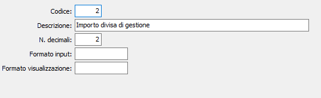

La tabella consente di definire i formati di visualizzazione di una serie di tipi di dato numerico. La tabella normalmente viene precaricata in sede di installazione; l’accesso a questa tabella dovrebbe essere ad esclusivo uso del Servizio Assistenza.

CODICE: codice numerico che identifica il tipo di formato gestito
DESCRIZIONE: è la descrizione del numero di formato
DECIMALI: è il numero di decimali utilizzati per la rappresentazione del particolare tipo di dato (ad esempio per tutti gli importi in moneta di conto al momento in cui si adotta l’Euro si imposta il valore di questo campo a 2).
FORMATO INPUT: in alternativa al normale formato di input del campo (impostato in base al numero di decimali specificato precedentemente è possibile specificare una stringa di controllo per la formattazione in fase di input.
FORMATO VISUALIZZAZIONE: in alternativa al normale formato di visualizzazione del campo (impostato in base al numero di decimali specificato precedentemente è possibile specificare) una stringa di controllo per la formattazione del campo in fase di visualizzazione.
La stringa per la formattazione dei campi alternativi per l'input e la visualizzazione dovrà contenere una serie di caratteri che identificano il formato da utilizzare:
# : identifica una cifra senza visualizzazione in caso di valore zero.
0 : identifica una cifra con visualizzazione in caso di valore zero.
. : identifica il separatore dei decimali.
, : identifica il separatore delle migliaia.
Esempio: #,###.#0 (1.551,20) - #,###.## (1.551,2 - 1.551,21)